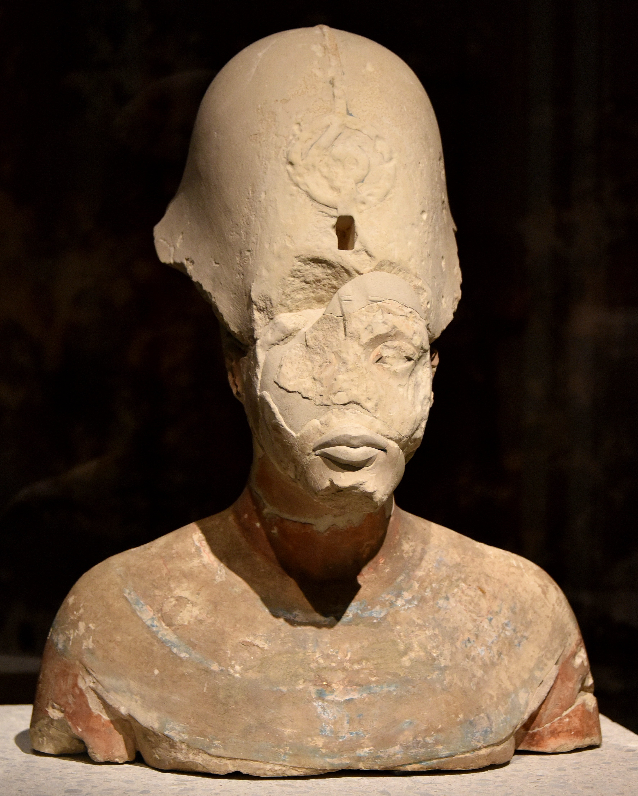

Israel nunca estuvo solo. A su alrededor, imperios inmensos se alzaban y caían. El primero en proyectar su sombra —y del que, según el relato, Israel mismo salió— fue Egipto.
Empezamos una nueva etapa del blog, y con ella cambiamos de escala. Hasta ahora hemos mirado a Israel desde dentro: sus textos, su tierra, sus aldeas. Pero Israel fue siempre un actor pequeño en un escenario dominado por gigantes. Egipto al suroeste; Asiria, Babilonia y Persia al noreste. Esta serie cuenta cómo esas grandes potencias —los vecinos imperiales— moldearon la religión de Israel, a veces por la fuerza, a veces por contagio de ideas. Y empezamos por el primero y más antiguo: Egipto. Pero antes, para situarnos, un mapa.
Fíjate en el punto rojo: Israel y Judá, siempre en el centro, siempre pequeños, siempre entre el yunque de un imperio y el martillo de otro. Esa posición —un corredor estrecho entre África y Asia, por el que pasaban todos los ejércitos— explica buena parte de su historia y de su religión. Empecemos por el gigante del sur.
Egipto ocupa un lugar único en la memoria de Israel: es el imperio del que se sale. Todo el relato del Éxodo —que vimos en la serie anterior— sitúa a Egipto como la casa de la esclavitud, el poder opresor del que YHWH libera a su pueblo. Aunque la arqueología cuestione el Éxodo masivo, el peso simbólico de Egipto en la Biblia es enorme e innegable: es el "otro" por excelencia, la potencia contra la que Israel define su propia libertad.
Y es históricamente cierto que Egipto dominó Canaán durante siglos. En la Edad del Bronce tardío, las ciudades-estado cananeas —de las que, según Finkelstein, surgirían los israelitas— eran vasallas del faraón. La sombra de Egipto sobre la tierra de Israel es un hecho arqueológico, mucho antes de cualquier relato bíblico.
Aquí una de las conexiones más fascinantes y debatidas. En el siglo XIV a.C., un faraón llamado Akhenatón hizo algo sin precedentes: abolió el politeísmo egipcio e impuso el culto exclusivo a un solo dios, Atón, el disco solar. Fue una revolución monoteísta —o casi— más de medio milenio antes de que Israel consolidara la suya.

¿Hay relación? Aquí hay que ser prudente. Existe un paralelo textual llamativo: el "Himno a Atón" de Akhenatón se parece notablemente al Salmo 104 de la Biblia, en imágenes y estructura. Algunos han especulado incluso —siguiendo a Freud— que el monoteísmo israelita bebió del de Akhenatón. Pero la mayoría de los estudiosos son cautos: el culto a Atón fue abolido y borrado tras la muerte del faraón, siglos antes de Israel, y el parecido del himno puede deberse a una tradición literaria común del Cercano Oriente, no a un préstamo directo.
Donde la influencia egipcia es sólida y aceptada no es en el monoteísmo, sino en un lugar más humilde: la literatura de sabiduría. Un pasaje del libro de los Proverbios (22:17–24:22) es tan parecido a una obra egipcia —la “Instrucción de Amenemope”— que los estudiosos aceptan ampliamente que el texto bíblico se inspiró en el egipcio, o ambos en una fuente común. Mismos consejos, mismas imágenes, a veces casi las mismas frases.
Esto revela algo importante sobre cómo funcionaba la cultura antigua: las ideas viajaban. Escribas de distintos pueblos compartían un fondo común de sabiduría práctica, y la Biblia no es una isla, sino parte de esa conversación regional. Egipto no le dio a Israel su Dios, pero sí contribuyó a su modo de pensar la vida buena.
Egipto influyó en Israel, pero no como a veces se cree. Su gran dios monoteísta (Atón) probablemente no engendró al de Israel —es un eco lejano, no un padre—. Pero la sabiduría egipcia sí dejó huella directa: parte de los Proverbios se inspira en un texto egipcio. Las ideas cruzaban fronteras.
Egipto fue para Israel el primer gran vecino: el opresor mítico del Éxodo, el señor de Canaán durante siglos, la fuente de una sabiduría que se filtró en sus libros, y quizá el eco lejano de una idea monoteísta anterior. Su sombra es larga, pero —lección de esta serie— hay que medir cada influencia con cuidado: algunas son directas y probadas (la sabiduría), otras son resonancias sugerentes pero indemostrables (Atón).
Egipto, sin embargo, fue un imperio del pasado para Israel. Los que de verdad marcarían su religión con hierro candente llegaron después, desde el noreste, y no como recuerdo sino como catástrofe. En la próxima entrega llega el primero de esos martillos: Asiria.
El dominio egipcio sobre la Canaán del Bronce tardío es consenso arqueológico. La reforma monoteísta de Akhenatón (culto a Atón, s. XIV a.C.) es un hecho histórico; su conexión con el monoteísmo israelita es especulativa y mayoritariamente rechazada como vínculo directo. El parecido entre el Himno a Atón y el Salmo 104 es real pero se atribuye a tradición compartida.
La dependencia de Proverbios 22–24 respecto de la Instrucción de Amenemope es ampliamente aceptada por los especialistas, aunque se discute la dirección exacta del préstamo. La teoría de Freud (Moisés y la religión monoteísta) se menciona como curiosidad histórica, no como posición académica vigente.
Este artículo describe influencias históricas y culturales; el valor religioso del Éxodo y de los textos bíblicos es una cuestión distinta, que este blog respeta.